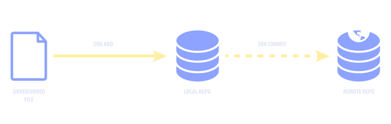
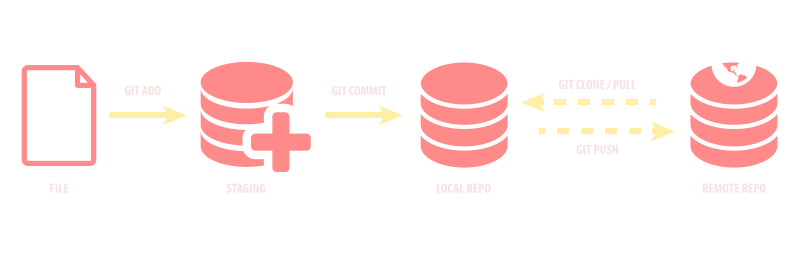
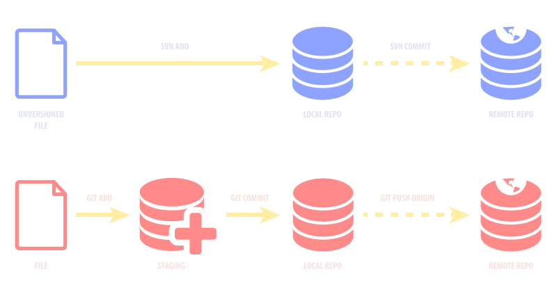

Ivan Djordjevic ~ UX Architect @ NCI
Author: Linus Torvalds
Initial release: 7 April 2005

# Add a new file
$ svn add %filename%
# Make the changes
# Get the latest changes before commiting
$ svn checkout
# Commit to Repo
$ svn commit -m "changes"

# Add to staging / New File
$ git add /filename/
# Make the changes
# Commit to Local Repo
$ git commit -m "changes"
# Get the Remote Changes
$ git pull origin
# Push to Remote Repo
$ git push -u origin /branch/
